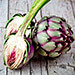
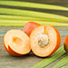
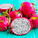
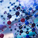

Alcachofa - Berenjena - Espirulina
Fortalece las articulaciones y recupera tu flexibilidad y movilidad.

Fortalece las articulaciones y recupera tu flexibilidad y movilidad.
Estimulan la regeneración del tejido cartilaginoso, nutren y fortalecen el tejido cartilaginoso.
Nutren las articulaciones con las vitaminas y minerales necesarios y mejoran la circulación sanguínea.

Protegen las células de las articulaciones del estrés oxidativo y eliminan las sales y toxinas nocivas.

Previenen la inflamación de las articulaciones, refuerzan el tejido cartilaginoso.
Prolongan la vida del sistema musculoesquelético, alivian el dolor en las articulaciones y los músculos.

Fortalecen los tejidos conjuntivos de las articulaciones, contienen antioxidantes que protegen contra los daños causados por los radicales libres.